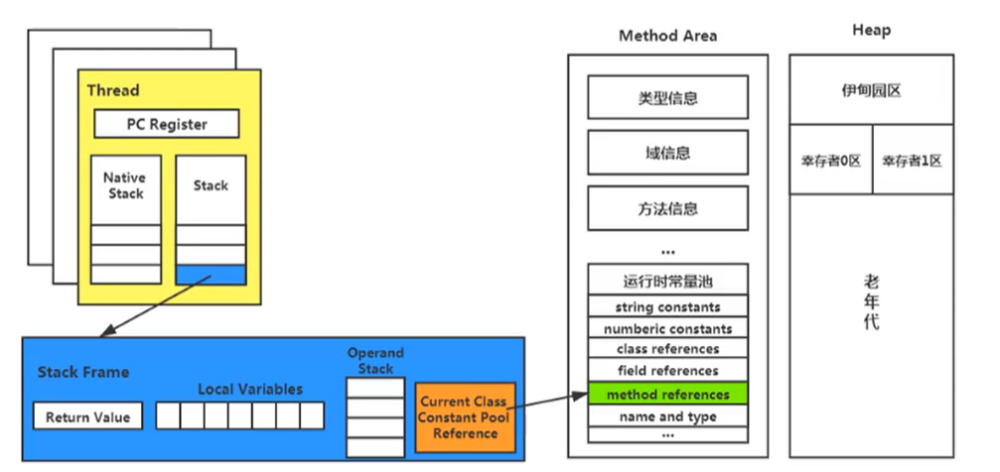

<!DOCTYPE html>


<html lang="en">


<head>
  <meta charset="utf-8" />
    
  <meta name="viewport" content="width=device-width, initial-scale=1, maximum-scale=1" />
  <title>
    JVM |  
  </title>
  <meta name="generator" content="hexo-theme-ayer">
  
  <link rel="shortcut icon" href="/favicon.ico" />
  
  <link rel="stylesheet" href="/dist/main.css">
  <link rel="stylesheet" href="https://cdn.jsdelivr.net/gh/Shen-Yu/cdn/css/remixicon.min.css">
  <link rel="stylesheet" href="/css/custom.css">
  
  <script src="https://cdn.jsdelivr.net/npm/pace-js@1.0.2/pace.min.js"></script>
  
  

  

</head>

</html>

<body>
  <div id="app">
    
      
    <main class="content on">
      <section class="outer">
  <article
  id="post-JVM"
  class="article article-type-post"
  itemscope
  itemprop="blogPost"
  data-scroll-reveal
>
  <div class="article-inner">
    
    <header class="article-header">
       
<h1 class="article-title sea-center" style="border-left:0" itemprop="name">
  JVM
</h1>
 

    </header>
     
    <div class="article-meta">
      <a href="/2020/07/29/JVM/" class="article-date">
  <time datetime="2020-07-29T07:22:36.000Z" itemprop="datePublished">2020-07-29</time>
</a> 
  <div class="article-category">
    <a class="article-category-link" href="/categories/%E5%90%8E%E7%AB%AF/">后端</a>
  </div>
  
<div class="word_count">
    <span class="post-time">
        <span class="post-meta-item-icon">
            <i class="ri-quill-pen-line"></i>
            <span class="post-meta-item-text"> Word count:</span>
            <span class="post-count">11.1k</span>
        </span>
    </span>

    <span class="post-time">
        &nbsp; | &nbsp;
        <span class="post-meta-item-icon">
            <i class="ri-book-open-line"></i>
            <span class="post-meta-item-text"> Reading time≈</span>
            <span class="post-count">41 min</span>
        </span>
    </span>
</div>
 
    </div>
      
    <div class="tocbot"></div>


  
    <div class="article-entry" itemprop="articleBody">
       
  <h1 id="基础概念"><a href="#基础概念" class="headerlink" title="基础概念"></a>基础概念</h1><h2 id="基于栈的指令集架构与基于寄存器的指令集架构"><a href="#基于栈的指令集架构与基于寄存器的指令集架构" class="headerlink" title="基于栈的指令集架构与基于寄存器的指令集架构"></a>基于栈的指令集架构与基于寄存器的指令集架构</h2><p>Java编译器输入的指令流基本上是一种基于栈的指令集架构，另外一种指令集架构则是基于寄存器的指令集架构。</p>
<p>基于栈式架构：</p>
<ul>
<li>设计和实现更简单，适用于资源受限的系统</li>
<li>避开了寄存器的分配难题：使用零地址指令方式分配</li>
<li>指令流中的指令大部分是零地址指令，其执行过程依赖于操作栈。指令集更小，编译器容易实现</li>
<li>不需要硬件支持</li>
</ul>
<p>基于寄存器架构：</p>
<ul>
<li>例如x86的二进制指令集</li>
<li>指令集架构完全依赖硬件</li>
<li>性能优秀，执行更高效</li>
<li>花费更少指令完成一项操作</li>
<li>通常为一地址指令、二地址指令、三地址指令。</li>
</ul>
<p>例如：计算2+3</p>
<p>基于栈：</p>
<pre><code>iconst_2 // 常量2入栈
istore_1
iconst_3 // 常量3入栈
istore_2
iload_1
iload_2
iadd  // 常量2，3出栈，执行相加
istore_0 // 结果5入栈</code></pre><p>基于寄存器：</p>
<pre><code>mov eax,2 // 将eax寄存器值设为2
add eax,3 // 使eax寄出器的值加3</code></pre><h3 id="反编译字节码案例"><a href="#反编译字节码案例" class="headerlink" title="反编译字节码案例"></a>反编译字节码案例</h3><p>StackStruTest.java</p>
<pre><code class="java">package com.sicmatr1x.java;

public class StackStruTest {
    public static void main(String[] args) {
        int i = 2;
        int j = 3;
        int k = i + j;
    }
}</code></pre>
<p>使用javap反编译指令反编译StackStruTest.class字节码文件：</p>
<pre><code>javap -v StackStruTest.class</code></pre><p>反编译结果：</p>
<pre><code>  Last modified 2020-7-30; size 486 bytes
  MD5 checksum 618bcdd36b54bf88b6efa145bd258086
  Compiled from &quot;StackStruTest.java&quot;
public class com.sicmatr1x.java.StackStruTest
  minor version: 0
  major version: 52
  flags: ACC_PUBLIC, ACC_SUPER
Constant pool:
   #1 = Methodref          #3.#21         // java/lang/Object.&quot;&lt;init&gt;&quot;:()V
   #2 = Class              #22            // com/sicmatr1x/java/StackStruTest
   #3 = Class              #23            // java/lang/Object
   #4 = Utf8               &lt;init&gt;
   #5 = Utf8               ()V
   #6 = Utf8               Code
   #7 = Utf8               LineNumberTable
   #8 = Utf8               LocalVariableTable
   #9 = Utf8               this
  #10 = Utf8               Lcom/sicmatr1x/java/StackStruTest;
  #11 = Utf8               main
  #12 = Utf8               ([Ljava/lang/String;)V
  #13 = Utf8               args
  #14 = Utf8               [Ljava/lang/String;
  #15 = Utf8               i
  #16 = Utf8               I
  #17 = Utf8               j
  #18 = Utf8               k
  #19 = Utf8               SourceFile
  #20 = Utf8               StackStruTest.java
  #21 = NameAndType        #4:#5          // &quot;&lt;init&gt;&quot;:()V
  #22 = Utf8               com/sicmatr1x/java/StackStruTest
  #23 = Utf8               java/lang/Object
{
  public com.sicmatr1x.java.StackStruTest();
    descriptor: ()V
    flags: ACC_PUBLIC
    Code:
      stack=1, locals=1, args_size=1
         0: aload_0
         1: invokespecial #1                  // Method java/lang/Object.&quot;&lt;init&gt;&quot;:()V
         4: return
      LineNumberTable:
        line 3: 0
      LocalVariableTable:
        Start  Length  Slot  Name   Signature
            0       5     0  this   Lcom/sicmatr1x/java/StackStruTest;

  public static void main(java.lang.String[]);
    descriptor: ([Ljava/lang/String;)V
    flags: ACC_PUBLIC, ACC_STATIC
    Code:
      stack=2, locals=4, args_size=1
         0: iconst_2
         1: istore_1
         2: iconst_3
         3: istore_2
         4: iload_1
         5: iload_2
         6: iadd
         7: istore_3
         8: return
      LineNumberTable:
        line 5: 0
        line 6: 2
        line 7: 4
        line 8: 8
      LocalVariableTable:
        Start  Length  Slot  Name   Signature
            0       9     0  args   [Ljava/lang/String;
            2       7     1     i   I
            4       5     2     j   I
            8       1     3     k   I
}
SourceFile: &quot;StackStruTest.java&quot;</code></pre><p>看code部分：</p>
<pre><code>Code:
    stack=2, locals=4, args_size=1
        0: iconst_2 // 定义常量2
        1: istore_1 // 保存到操作数1的栈中
        2: iconst_3 // 定义常量3
        3: istore_2 // 保存到操作数2的栈中
        4: iload_1 // 加载操作数1的值
        5: iload_2 // 加载操作数2的值
        6: iadd // 求和
        7: istore_3 // 保存到操作数3的栈中
        8: return</code></pre><h2 id="JVM的生命周期"><a href="#JVM的生命周期" class="headerlink" title="JVM的生命周期"></a>JVM的生命周期</h2><ol>
<li>虚拟机的启动：JVM的启动时通过引导类加载器(bootstrap class loader)创建一个初始类(initial class)来完成的，这个类是由JVM的具体实现指定的。</li>
<li>虚拟机的执行</li>
<li>虚拟机的终止：<ul>
<li>程序正常执行结束</li>
<li>程序在执行过程中遇到异常或错误而异常终止</li>
<li>操作系统出现错误而导致JVM进程终止</li>
<li>某线程调用Runtime类或System类的exit方法或Runtime类的halt方法，并且Java安全管理器也允许这个词exit或halt操作</li>
<li>JNI(Java Native Interface)规范描述了用JNI Invocation API来加载或卸载JVM时JVM的退出情况</li>
</ul>
</li>
</ol>
<h2 id="JVM发展历程"><a href="#JVM发展历程" class="headerlink" title="JVM发展历程"></a>JVM发展历程</h2><h3 id="Sum-Classic-VM"><a href="#Sum-Classic-VM" class="headerlink" title="Sum Classic VM"></a>Sum Classic VM</h3><p>世界上第一款商用Java虚拟机，虚拟机内部只提供了解释器</p>
<h3 id="Exact-VM"><a href="#Exact-VM" class="headerlink" title="Exact VM"></a>Exact VM</h3><p>JDK1.2</p>
<p>准确式内存管理(Exact Memory Management)：虚拟机可以知道内存中某个位置的数据具体是什么类型</p>
<h3 id="HotSpot-VM"><a href="#HotSpot-VM" class="headerlink" title="HotSpot VM"></a>HotSpot VM</h3><p>JDK1.3</p>
<p>是JDK6, JDK8默认虚拟机</p>
<h3 id="BEA的JRockit"><a href="#BEA的JRockit" class="headerlink" title="BEA的JRockit"></a>BEA的JRockit</h3><p>专注于服务器端应用</p>
<p>JRockit JVM是世界上最快的JVM</p>
<h3 id="IBM的J9"><a href="#IBM的J9" class="headerlink" title="IBM的J9"></a>IBM的J9</h3><p>IBM Techology for Java Virtual Machine简称IT4J，内部代号J9</p>
<h3 id="KVM和CDC-CLDC-Hotspot"><a href="#KVM和CDC-CLDC-Hotspot" class="headerlink" title="KVM和CDC/CLDC Hotspot"></a>KVM和CDC/CLDC Hotspot</h3><p>目前移动领域地位尴尬，KVM简单、轻量、高度可移植，面向低端可移动设备</p>
<h3 id="Azul-VM"><a href="#Azul-VM" class="headerlink" title="Azul VM"></a>Azul VM</h3><p>Azul VM和BEA Liquid VM与特定硬件平台绑定、软硬件配合的专有虚拟机</p>
<p>每个Azul VM实例都可以管理至少数十个CPU和数百GB内存的硬件资源，提供在巨大内存内实现可控的GC时间的垃圾收集器、专有硬件优化的线程调度等</p>
<h3 id="BEA-Liquid-VM"><a href="#BEA-Liquid-VM" class="headerlink" title="BEA Liquid VM"></a>BEA Liquid VM</h3><p>BEA开发用于自家Hypervisor系统，不需要操作系统的支持，它本身实现了一个专用操作系统的必要功能</p>
<h3 id="Apache-Harmony"><a href="#Apache-Harmony" class="headerlink" title="Apache Harmony"></a>Apache Harmony</h3><p>JDK1.5, JDK1.6</p>
<p>由IBM于Intel联合开发</p>
<h3 id="Microsoft-JVM"><a href="#Microsoft-JVM" class="headerlink" title="Microsoft JVM"></a>Microsoft JVM</h3><h3 id="Taobao-JVM"><a href="#Taobao-JVM" class="headerlink" title="Taobao JVM"></a>Taobao JVM</h3><p>基于OpenJDK HotSpot VM深度定制且开源的高性能服务器</p>
<h3 id="Dalvik-VM"><a href="#Dalvik-VM" class="headerlink" title="Dalvik VM"></a>Dalvik VM</h3><p>是虚拟机但不是Java虚拟机，不能直接执行Java的class文件，美原油遵循Java虚拟机规范</p>
<p>基于寄存器架构，不是JVM的栈架构，执行dex(Dalvik Executable)文件，可由class文件转化来</p>
<h3 id="Graal-VM"><a href="#Graal-VM" class="headerlink" title="Graal VM"></a>Graal VM</h3><p>Graal VM在HotSpot VM基础上增强而成的跨语言全栈虚拟机，可以作为任何语言的运行平台使用(包括：Java, Scala, Groovy, Kotlin; C, C++, JavaScript, Ruby, Python, R等)</p>
<p>支持不同语言中混用对方的接口和对象，支持这些语言使用已经编写好的本地库文件。工作原理是将这些语言的源码或源码编译后的中间格式通过解释器转换成能被Graal VM接受的中间表示。</p>
<p>还提供Truffle工具集快速构建面向一种新语言的解释器。</p>
<h1 id="内存与垃圾回收"><a href="#内存与垃圾回收" class="headerlink" title="内存与垃圾回收"></a>内存与垃圾回收</h1><h2 id="内存结构概述"><a href="#内存结构概述" class="headerlink" title="内存结构概述"></a>内存结构概述</h2>


<p>类加载子系统负责从文件系统或网络中加载class文件，class文件在文件开头有特定的文件标识</p>
<p>ClassLoader只负责class文件的加载，至于它是否可以运行，则由Execution Engine决定</p>
<p>加载的类信息存放在叫做方法区的内存空间。除了类信息外，方法区还存放运行时常量池信息，可能还有字符串和数字常量</p>
<p>class file加载到JVM中被称为DNA元数据模板，放在方法区</p>
<h3 id="字节码文件-class"><a href="#字节码文件-class" class="headerlink" title="字节码文件.class"></a>字节码文件.class</h3><p>使用二进制查看器打开任意字节码文件可以观察到期开头4个字节用十六进制表示为<code>CA FE BA BE</code>(可记为咖啡宝贝)，这是字节码文件固定头部</p>
<h3 id="1-加载-Loading"><a href="#1-加载-Loading" class="headerlink" title="1. 加载 Loading"></a>1. 加载 Loading</h3><ol>
<li>通过一个类的全限定名获取定义此类的二进制字节流</li>
<li>将这个字节流所代表的今天存储结构转化为方法区的运行时数据结构</li>
<li>在内存中生成一个代表这个类的java.lang.Class对象，作为方法区这个类的各种数据的访问入口</li>
</ol>
<p>可以从哪些地方加载.class文件呢：</p>
<ul>
<li>本地文件加载</li>
<li>网络获取，典型场景：web Applet</li>
<li>zip压缩包中读取</li>
<li>运行时计算生成，使用最多的是：动态代理技术</li>
<li>其它文件生成，例如：JSP应用</li>
<li>专有数据库提取.class文件，少见</li>
<li>加密文件中获取，可防止class文件被反编译</li>
</ul>
<h3 id="2-链接-Linking"><a href="#2-链接-Linking" class="headerlink" title="2. 链接 Linking"></a>2. 链接 Linking</h3><p>该阶段分为以下几步：</p>
<ol>
<li>验证(Verify)<ul>
<li>目的在于确保class文件的字节流中包含信息符合当前虚拟机的要求，保证被加载类的正确性，不会危害虚拟机自身安全</li>
<li>主要包括四种验证：<ol>
<li>文件格式验证</li>
<li>元数据验证</li>
<li>字节码验证</li>
<li>符号引用验证</li>
</ol>
</li>
</ul>
</li>
<li>准备(Prepare)<ul>
<li>为变量分配内存并且设置该类变量的默认初始值，即零值</li>
<li>这里不包含用final修饰的static，因为final在编译的时候就会分配了，准备阶段会显示初始化</li>
<li>这里不会为实例变量分配初始化，类变量会分配在方法区中，而实例变量会随着对象一起分配到java堆中</li>
</ul>
</li>
<li>解析(Resolve)<ul>
<li>将常量池内的符号引用转换为直接引用的过程</li>
<li>解析操作往往伴随JVM在执行完初始化之后再执行</li>
<li>符号引用就是一组符号来描述所引用的目标。</li>
<li>解析动作主要针对类或接口、字段、类方法、接口方法、方法类型等。</li>
</ul>
</li>
</ol>
<h3 id="3-初始化-Initialization"><a href="#3-初始化-Initialization" class="headerlink" title="3. 初始化 Initialization"></a>3. 初始化 Initialization</h3><ul>
<li>初始化阶段就是执行类构造器方法<code>&lt;clinit&gt;()</code>的过程</li>
<li>此方法不需定义，是由javac编译器自动收集类中的所有类变量的赋值动作和静态代码块中的语句合并而来</li>
<li>构造器方法中指令按语句在源文件中出现的顺序执行</li>
<li><code>&lt;clinit&gt;()</code>不同于类的构造器<code>&lt;init&gt;()</code>，若一个类中没有静态变量和静态代码块则字节码文件中无<code>&lt;clinit&gt;()</code>方法</li>
<li>虚拟机必须保证一个类的<code>&lt;clinit&gt;()</code>方法在多线程下被同步加锁</li>
</ul>
<pre><code class="java">package com.sicmatr1x.java;

public class ClinitTest {
    private int a = 1;
    private static int c = 3;

    public static void main(String[] args) {
        int b = 2;
    }

    public ClinitTest() {
        a = 10;
        int d = 20;
    }
}</code></pre>
<p>反编译字节码文件可以看到存在<code>&lt;clinit&gt;()</code>和<code>&lt;init&gt;()</code></p>
<p><code>&lt;init&gt;</code>如下：</p>
<pre><code> 0 aload_0
 1 invokespecial #1 &lt;java/lang/Object.&lt;init&gt;&gt;
 4 aload_0
 5 iconst_1
 6 putfield #2 &lt;com/sicmatr1x/java/ClinitTest.a&gt;
 9 aload_0
10 bipush 10
12 putfield #2 &lt;com/sicmatr1x/java/ClinitTest.a&gt;
15 bipush 20
17 istore_1
18 return</code></pre><p>可以看到先给a赋值10再给d赋值20</p>
<h2 id="类的加载过程"><a href="#类的加载过程" class="headerlink" title="类的加载过程"></a>类的加载过程</h2><h3 id="类加载器的分类"><a href="#类加载器的分类" class="headerlink" title="类加载器的分类"></a>类加载器的分类</h3><p>JVM支持两种类型的类加载器：</p>
<ol>
<li>引导类加载器(Bootstrap ClassLoader)</li>
<li>自定义类加载器(User-Defined ClassLoader)：所有派生于抽象类ClassLoader的类加载器都可划分为自定义类加载器</li>
</ol>
<p>启动类加载器(引导类加载器, Bootstrap ClassLoader)：</p>
<ul>
<li>使用C/C++语言实现，嵌套在JVM内部</li>
<li>用于加载Java的核心库(JAVA_HOME/jre/lib/rt.jar, resources.jar或sun.boot.class.path路径下的内容)</li>
<li>不继承于java.lang.ClassLoader，没有父加载器</li>
<li>加载扩展类和应用程序类加载器，并制定为他们的父类加载器</li>
<li>处于安全考虑，Bootstrap启动类加载器只加载包名为java, javax, sun等开头的类</li>
</ul>
<p>扩展类加载器(Extension ClassLoader)</p>
<ul>
<li>Java语言编写，由sun.misc.Launcher$ExtClassLoader实现</li>
<li>派生于ClassLoader类</li>
<li>父类加载器为启动类加载器</li>
<li>从java.ext.dirs系统属性所指定的目录中加载类库，或从JDK的安装目录的jre/lib/ext子目录下加载类库。如果用户创建的JAR放在此目录，也会自动由扩展类加载器加载。</li>
</ul>
<p>应用程序类加载器(系统类加载器, AppClassLoader)</p>
<ul>
<li>Java语言编写，由sun.misc.Launcher$AppClassLoader实现</li>
<li>派生于ClassLoader类</li>
<li>父类加载器为扩展类加载器</li>
<li>负责加载环境变量classpath或系统属性java.class.path指定路径下的类库</li>
<li>该类加载器是程序中默认的类加载器，通常Java应用的类都由它来加载</li>
<li>通过<code>ClassLoader#getSystemClassLoader()</code>方法可以获取到该类加载器</li>
</ul>
<p>获取Bootstrap ClassLoader类加载器和Extension ClassLoader类加载器可以加载的路径和jar包</p>
<pre><code class="java">package com.sicmatr1x.java;

import sun.misc.Launcher;
import sun.misc.URLClassPath;

import java.net.URL;

public class ClassLoaderTest1 {
    public static void main(String[] args) {
        System.out.println(&quot;引导类加载器：&quot;);
        URLClassPath urlClassPath = Launcher.getBootstrapClassPath();
        URL[] urls = urlClassPath.getURLs();
        for (URL url : urls) {
            System.out.println(url.toExternalForm());
        }
        System.out.println(&quot;扩展类加载器：&quot;);
        String extDirs = System.getProperty(&quot;java.ext.dirs&quot;);
        for (String dir : extDirs.split(&quot;;&quot;)) {
            System.out.println(dir);
        }
    }
}
</code></pre>
<pre><code>引导类加载器：
file:/C:/Program%20Files/Java/jdk1.8.0_231/jre/lib/resources.jar
file:/C:/Program%20Files/Java/jdk1.8.0_231/jre/lib/rt.jar
file:/C:/Program%20Files/Java/jdk1.8.0_231/jre/lib/sunrsasign.jar
file:/C:/Program%20Files/Java/jdk1.8.0_231/jre/lib/jsse.jar
file:/C:/Program%20Files/Java/jdk1.8.0_231/jre/lib/jce.jar
file:/C:/Program%20Files/Java/jdk1.8.0_231/jre/lib/charsets.jar
file:/C:/Program%20Files/Java/jdk1.8.0_231/jre/lib/jfr.jar
file:/C:/Program%20Files/Java/jdk1.8.0_231/jre/classes
扩展类加载器：
C:\Program Files\Java\jdk1.8.0_231\jre\lib\ext
C:\Windows\Sun\Java\lib\ext</code></pre><p>用户自定义类加载器：</p>
<ul>
<li>什么时候需要用户自定义类加载器：<ul>
<li>隔离加载类：例如：确保应用中引用的jar包与中间件引用的第三方jar包不冲突</li>
<li>修改类加载方式：例如：需要时候动态加载</li>
<li>扩展加载源：例如：从数据库中加载</li>
<li>防止源码泄露</li>
</ul>
</li>
<li>用户自定义类加载器实现步骤：<ol>
<li>开发人员可以通过继承抽象类java.lang.ClassLoader类的方式实现自己的类加载器</li>
<li>在JDK1.2之前，自定义类加载器需要继承ClassLoader类并重写loadClass()方法，从而实现自定义的类加载器。JDK1.2之后不建议用户覆盖loadClass()方法，建议把自定义的类加载逻辑写在findClass()方法中</li>
<li>编写自定义类加载器时若无过于复杂的需求建议直接继承URLClassLoader类，这样可以避免自己去编写findClass()方法及获取字节码流的方式，是自定义类加载器编写更加简洁</li>
</ol>
</li>
</ul>
<pre><code class="java">package com.sicmatr1x.java;

import java.io.FileNotFoundException;

public class CustomClassLoader extends ClassLoader{
    @Override
    protected Class&lt;?&gt; findClass(String name) throws ClassNotFoundException {

        try {
            byte[] result = getClassFromCustomPath(name);
            if(result == null){
                throw new FileNotFoundException();
            }else{
                return defineClass(name,result,0,result.length);
            }
        } catch (FileNotFoundException e) {
            e.printStackTrace();
        }

        throw new ClassNotFoundException(name);
    }

    private byte[] getClassFromCustomPath(String name){
        //从自定义路径中加载指定类:细节略
        //如果指定路径的字节码文件进行了加密，则需要在此方法中进行解密操作。
        return null;
    }

    public static void main(String[] args) {
        CustomClassLoader customClassLoader = new CustomClassLoader();
        try {
            Class&lt;?&gt; clazz = Class.forName(&quot;One&quot;,true,customClassLoader);
            Object obj = clazz.newInstance();
            System.out.println(obj.getClass().getClassLoader());
        } catch (Exception e) {
            e.printStackTrace();
        }
    }
}
</code></pre>
<h3 id="关于ClassLoader"><a href="#关于ClassLoader" class="headerlink" title="关于ClassLoader"></a>关于ClassLoader</h3><p>常用方法：</p>
<ul>
<li>getParent(): 返回该类加载器的超类加载器</li>
<li>loadClass(String name): 加载名称为name的类，返回结果为java.lang.Class类的实例</li>
<li>findClass(String name): 查找名称为name的类，返回结果为java.lang.Class类的实例</li>
<li>findLoadedClass(String name): 查找名称为name的已经被加载过的类，返回结果为java.lang.Class类的实例</li>
<li>defineClass(String name, byte[] b, int off, int len): 把字节数组b中的内容转换为一个Java类，返回结果为java.lang.Class类的实例</li>
<li>resolveClass(Class&lt;?&gt; c): 连接指定的一个Java类</li>
</ul>
<h3 id="双亲委派机制"><a href="#双亲委派机制" class="headerlink" title="双亲委派机制"></a>双亲委派机制</h3><p>JVM对class文件采用按需加载的方式，即需要使用到该类时才会把class文件加载到内存生成class对象。而且在加载时JVM采用的是双亲委派机制，即把请求交由父类处理，它是一种任务委派模式。</p>
<ol>
<li>如果一个类加载器收到了类加载请求，它并不会自己先去加载，而是把这个请求委托给父类的加载器去执行</li>
<li>如果父类加载器还存在其父类加载器，则进一步向上委托，一次递归，请求最终将到达顶层的启动类加载器</li>
<li>如果父类加载器可以完成类加载任务，就成功返回，若无法完成，之类加载器才会去加载。</li>
</ol>
<p>优点：</p>
<ul>
<li>避免类的重复加载：一旦一个类被父加载器加载则不会再被子加载器加载</li>
<li>保护程序安全，防止核心API被篡改：比如你自己定义一个java.lang.String就不会被AppClassLoader加载而是Bootstrap ClassLoader加载java的String</li>
</ul>
<p>沙箱安全机制：<br>自定义String类在加载的时候回率先使用引导类加载器加载，而引导类加载器会先加载JDK自带的文件rt.jar包中的java\lang\String.class，这样可以保证对java核心源代码的保护</p>
<h3 id="其它"><a href="#其它" class="headerlink" title="其它"></a>其它</h3><p>JVM中表示两个class对象是否为同一个类存在的两个必要条件：</p>
<ol>
<li>类的完整类名必须一致，包括包名</li>
<li>加载这个类的ClassLoader(指ClassLoader实例对象)必须相同</li>
</ol>
<h3 id="对类加载器的引用"><a href="#对类加载器的引用" class="headerlink" title="对类加载器的引用"></a>对类加载器的引用</h3><p>JVM知道一个类时由启动类加载器加载器加载的还是由用户类加载器加载的。若是由用户类加载器加载的，JVM会将这个类加载器的一个引用作为类型信息的一部分保存在方法区中。当解析一个类到另一个类的时候，JVM需要保证这两个类的类加载器是相同的。</p>
<h3 id="类的主动使用与被动使用"><a href="#类的主动使用与被动使用" class="headerlink" title="类的主动使用与被动使用"></a>类的主动使用与被动使用</h3><p>主动使用的七种情况：</p>
<ol>
<li>创建类的实例</li>
<li>访问某个类或接口的静态变量，或对该静态变量赋值</li>
<li>调用类的静态方法</li>
<li>反射</li>
<li>初始化一个类的子类</li>
<li>Java虚拟机启动时被标明为启动类的类</li>
<li>JDK7开始提供动态语言支持：<ul>
<li>java.lang,invoke.MethodHandle实例的解析结果</li>
<li>REF_getStatic, REF_putStatic, REF_invokeStatic句柄对应的类没有初始化，则初始化</li>
</ul>
</li>
</ol>
<p>除了主动使用的七种情况外都算被动使用</p>
<h2 id="运行时数据区-Runtime-Data-Area-内部结构"><a href="#运行时数据区-Runtime-Data-Area-内部结构" class="headerlink" title="运行时数据区(Runtime Data Area)内部结构"></a>运行时数据区(Runtime Data Area)内部结构</h2><p>运行时数据区的完整图</p>


<p>Java虚拟机定义了若干种程序运行期间会使用到的运行时数据区，其中有一些会随着虚拟机启动而创建，随着虚拟机退出而销毁。另外一些则是与线程一一对应的，这些与线程对应的数据区域会随着线程开始和结束而创建和销毁。</p>
<ul>
<li>每个线程：独立包括程序计数器、栈、本地栈。</li>
<li>线程间共享：堆、堆外内存（永久代或元空间、代码缓存）</li>
</ul>


<h3 id="线程"><a href="#线程" class="headerlink" title="线程"></a>线程</h3><p>线程是一个程序里的运行单元。JVM允许一个应用有多个线程并行的执行。<br>在Hotspot JVM里，每个线程都与操作系统的本地线程直接映射。</p>
<ul>
<li>当一个Java线程准备好执行以后，此时一个操作系统的本地线程也同时创建。Java线程执行终止后，本地线程也会回收。</li>
</ul>
<p>操作系统负责所有线程的安排调度到任何一个可用的CPU上。一旦本地线程初始化成功，它就会调用Java线程中的run()方法。</p>
<h4 id="JVM系统线程"><a href="#JVM系统线程" class="headerlink" title="JVM系统线程"></a>JVM系统线程</h4><p>如果你使用console或者是任何一个调试工具，都能看到在后台有许多线程在运行。这些后台线程不包括调用public static void main（String[]）的main线程以及所有这个main线程自己创建的线程。|<br>这些主要的后台系统线程在Hotspot JVM里主要是以下几个：</p>
<ul>
<li>虚拟机线程：这种线程的操作是需要JVM达到安全点才会出现。这些操作必须在不同的线程中发生的原因是他们都需要JVM达到安全点，这样堆才不会变化。这种线程的执行类型包括”stop-the-world”的垃圾收集，线程栈收集，线程挂起以及偏向锁撤销。</li>
<li>周期任务线程：这种线程是时间周期事件的体现（比如中断），他们一般用于周期性操作的调度执行。</li>
<li>GC线程：这种线程对在JVM里不同种类的垃圾收集行为提供了支持。</li>
<li>编译线程：这种线程在运行时会将字节码编译成到本地代码。</li>
<li>信号调度线程：这种线程接收信号并发送给JVM，在它内部通过调用适当的方法进行处理。</li>
</ul>
<h3 id="程序计数器"><a href="#程序计数器" class="headerlink" title="程序计数器"></a>程序计数器</h3><p>JVM中的程序计数寄存器（Program Counter Register）中，Register的命名源于CPU的寄存器，寄存器存储指令相关的现场信息。CPU只有把数据装载到寄存器才能够运行。这里，并非是广义上所指的物理寄存器，或许将其翻译为PC计数器（或指令计数器）会更加贴切（也称为程序钩子），并且也不容易引起一些不必要的误会。JVM中的PC寄存器是对物理PC寄存器的一种抽象模拟。</p>
<p>作用：PC寄存器用来存储指向下一条指令的地址，也即将要执行的指令代码。由执行引擎读取下一条指令。</p>
<p>在JVM规范中，每个线程都要它自己的程序计数器，是线程私有的，生命周期与线程的生命周期保持一致。</p>
<p>任何时间都只有一个方法在执行，程序计数器会存储当前线程正在执行的Java方法的JVM指令地址，若为native方法则为undefined</p>
<h4 id="面试常见问题"><a href="#面试常见问题" class="headerlink" title="面试常见问题"></a>面试常见问题</h4><ol>
<li>使用PC寄存器存储字节码指令地址有什么用？为什么使用PC寄存器记录当前线程的执行地址？</li>
</ol>
<p>因为CPU需要不停的切换各个线程，这时候切换回来以后就需要知道从哪开始继续执行。JVM的字节码解释器需要通过改变PC寄存器的值来明确下一条应该执行什么样的字节码指令。</p>
<ol start="2">
<li>PC寄存器为什么会被设定为线程私有？</li>
</ol>
<p>我们都知道所谓的多线程在一个特定的时间段内只会执行其中某一个线程的方法，CPU会不停地做任务切换，这样必然导致经常中断或恢复，如何保证分毫无差呢？为了能够准确地记录各个线程正在执行的当前字节码指令地址，最好的办法自然是为每一个线程都分配一个PC寄存器，这样一来各个线程之间便可以进行独立计算，从而不会出现相互干扰的情况。</p>
<p>由于CPU时间片轮限制，众多线程在并发执行过程中，任何一个确定的时刻，一个处理器或者多核处理器中的一个内核，只会执行某个线程中的一条指令。</p>
<p>这样必然导致经常中断或恢复，如何保证分毫无差呢？每个线程在创建后，都会产生自己的程序计数器和栈帧，程序计数器在各个线程之间互不影响。</p>
<h3 id="堆与栈"><a href="#堆与栈" class="headerlink" title="堆与栈"></a>堆与栈</h3><p>首先栈是运行时的单位，而堆是存储的单位</p>
<ul>
<li>栈解决程序的运行问题，即程序如何执行，或者说如何处理数据。</li>
<li>堆解决的是数据存储的问题，即数据怎么放，放哪里</li>
</ul>
<h3 id="虚拟机栈"><a href="#虚拟机栈" class="headerlink" title="虚拟机栈"></a>虚拟机栈</h3><p>Java虚拟机栈（Java Virtual Machine Stack），早期也叫Java栈。每个线程在创建时都会创建一个虚拟机栈，其内部保存一个个的栈帧（Stack Frame），对应着一次次的Java方法调用。</p>
<ul>
<li>每个方法执行，伴随着进栈（入栈、压栈）</li>
<li>执行结束后的出栈工作</li>
</ul>
<p>对于栈来说不存在垃圾回收问题（栈存在溢出的情况）</p>
<p>虚拟机栈包括多个栈帧，每个栈帧包括：</p>
<ul>
<li>局部变量表</li>
<li>操作数栈</li>
<li>动态链接</li>
<li>方法返回地址</li>
</ul>
<h4 id="栈中可能出现的异常"><a href="#栈中可能出现的异常" class="headerlink" title="栈中可能出现的异常"></a>栈中可能出现的异常</h4><p>Java 虚拟机规范允许Java栈的大小是动态的或者是固定不变的。</p>
<p>如果采用固定大小的Java虚拟机栈，那每一个线程的Java虚拟机栈容量可以在线程创建的时候独立选定。如果线程请求分配的栈容量超过Java虚拟机栈允许的最大容量，Java虚拟机将会抛出一个<code>StackOverFlowError</code> 异常。</p>
<p>如果Java虚拟机栈可以动态扩展，并且在尝试扩展的时候无法申请到足够的内存，或者在创建新的线程时没有足够的内存去创建对应的虚拟机栈，那Java虚拟机将会抛出一个<code>OutOfMemoryError</code> 异常。</p>
<h4 id="设置栈内存大小"><a href="#设置栈内存大小" class="headerlink" title="设置栈内存大小"></a>设置栈内存大小</h4><p>我们可以使用参数 -Xss选项来设置线程的最大栈空间，栈的大小直接决定了函数调用的最大可达深度，可以设置到idea的VM Options里面</p>
<pre><code class="java">-Xss1m
-Xss1k</code></pre>
<h3 id="栈的存储单位"><a href="#栈的存储单位" class="headerlink" title="栈的存储单位"></a>栈的存储单位</h3><p>每个线程都有自己的栈，栈中的数据都是以栈帧（Stack Frame）的格式存在。</p>
<p>在这个线程上正在执行的每个方法都各自对应一个栈帧（Stack Frame）。</p>
<p>栈帧是一个内存区块，是一个数据集，维系着方法执行过程中的各种数据信息。</p>
<p>在一条活动线程中，一个时间点上，只会有一个活动的栈帧。即只用当前正在执行方法的栈帧(栈顶栈帧)是有效的，也被称为当前栈帧(Current Frame)，与当前栈帧相对应的方法就是当前方法（Current Method），定义这个方法的类就是当前类（Current Class）</p>
<p>执行引擎运行的所有字节码指令只针对当前栈帧进行操作。</p>
<p>如果在该方法中调用了其他方法，对应的新的栈帧会被创建出来，放在栈的顶端，成为新的当前帧。</p>
<h4 id="栈运行原理"><a href="#栈运行原理" class="headerlink" title="栈运行原理"></a>栈运行原理</h4><p>不同线程中所包含的栈帧是不允许存在相互引用的，即不可能在一个栈帧之中引用另外一个线程的栈帧。</p>
<p>如果当前方法调用了其他方法，方法返回之际，当前栈帧会传回此方法的执行结果给前一个栈帧，接着，虚拟机会丢弃当前栈帧，使得前一个栈帧重新成为当前栈帧。</p>
<p>Java方法有两种返回函数的方式，一种是正常的函数返回，使用return指令；另外一种是抛出异常。不管使用哪种方式，都会导致栈帧被弹出。</p>
<h4 id="栈帧的内部结构"><a href="#栈帧的内部结构" class="headerlink" title="栈帧的内部结构"></a>栈帧的内部结构</h4><p>每个栈帧中存储着：</p>
<ul>
<li>局部变量表（Local Variables）</li>
<li>操作数栈（operand Stack）（或表达式栈）</li>
<li>动态链接（DynamicLinking）（或指向运行时常量池的方法引用）</li>
<li>方法返回地址（Return Address）（或方法正常退出或者异常退出的定义）</li>
<li>一些附加信息</li>
</ul>


<h3 id="局部变量表-Local-Variables"><a href="#局部变量表-Local-Variables" class="headerlink" title="局部变量表(Local Variables)"></a>局部变量表(Local Variables)</h3><p>局部变量表：Local Variables，被称之为局部变量数组或本地变量表</p>
<p>定义为一个数字数组，主要用于存储方法参数和定义在方法体内的局部变量这些数据类型包括各类基本数据类型、对象引用（reference），以及returnAddress类型。</p>
<p>由于局部变量表是建立在线程的栈上，是线程的私有数据，因此不存在数据安全问题</p>
<p>局部变量表所需的容量大小是在编译期确定下来的，并保存在方法的Code属性的maximum local variables数据项中。在方法运行期间是不会改变局部变量表的大小的。</p>
<p>方法嵌套调用的次数由栈的大小决定。一般来说，栈越大，方法嵌套调用次数越多。对一个函数而言，它的参数和局部变量越多，使得局部变量表膨胀，它的栈帧就越大，以满足方法调用所需传递的信息增大的需求。进而函数调用就会占用更多的栈空间，导致其嵌套调用次数就会减少。</p>
<p>局部变量表中的变量只在当前方法调用中有效。在方法执行时，虚拟机通过使用局部变量表完成参数值到参数变量列表的传递过程。当方法调用结束后，随着方法栈帧的销毁，局部变量表也会随之销毁。</p>
<h4 id="关于Slot的理解"><a href="#关于Slot的理解" class="headerlink" title="关于Slot的理解"></a>关于Slot的理解</h4><p>参数值的存放总是在局部变量数组的index0开始，到数组长度-1的索引结束。</p>
<p>局部变量表，最基本的存储单元是Slot（变量槽）局部变量表中存放编译期可知的各种基本数据类型（8种），引用类型（reference），returnAddress类型的变量。</p>
<p>在局部变量表里，32位以内的类型只占用一个slot（包括returnAddress类型），64位的类型（1ong和double）占用两个slot。</p>
<blockquote>
<p>byte、short、char 在存储前被转换为int，boolean也被转换为int，0表示false，非0表示true。<br>1ong和double则占据两个slot。</p>
</blockquote>
<p>JVM会为局部变量表中的每一个Slot都分配一个访问索引，通过这个索引即可成功访问到局部变量表中指定的局部变量值</p>
<p>当一个实例方法被调用的时候，它的方法参数和方法体内部定义的局部变量将会按照顺序被复制到局部变量表中的每一个slot上</p>
<p>如果需要访问局部变量表中一个64bit的局部变量值时，只需要使用前一个索引即可。（比如：访问1ong或doub1e类型变量）</p>
<p>如果当前帧是由构造方法或者实例方法创建的，那么该对象引用this将会存放在index为0的s1ot处，其余的参数按照参数表顺序继续排列。</p>


<p>栈帧中的局部变量表中的槽位是可以重用的，如果一个局部变量过了其作用域，那么在其作用域之后申明的新的局部变就很有可能会复用过期局部变量的槽位，从而达到节省资源的目的。</p>
<h4 id="静态变量与局部变量的对比"><a href="#静态变量与局部变量的对比" class="headerlink" title="静态变量与局部变量的对比"></a>静态变量与局部变量的对比</h4><p>变量的分类：</p>
<ul>
<li>按数据类型分：基本数据类型、引用数据类型</li>
<li>按类中声明的位置分：成员变量（类变量，实例变量）、局部变量<ul>
<li>类变量：linking的paper阶段，给类变量默认赋值，init阶段给类变量显示赋值即静态代码块</li>
<li>实例变量：随着对象创建，会在堆空间中分配实例变量空间，并进行默认赋值</li>
<li>局部变量：在使用前必须进行显式赋值，不然编译不通过。</li>
</ul>
</li>
</ul>
<p>我们知道类变量表有两次初始化的机会，第一次是在“准备阶段”，执行系统初始化，对类变量设置零值，另一次则是在“初始化”阶段，赋予程序员在代码中定义的初始值。</p>
<p>和类变量初始化不同的是，局部变量表不存在系统初始化的过程，这意味着一旦定义了局部变量则必须人为的初始化，否则无法使用。</p>
<p>在栈帧中，与性能调优关系最为密切的部分就是前面提到的局部变量表。在方法执行时，虚拟机使用局部变量表完成方法的传递。</p>
<p>局部变量表中的变量也是重要的垃圾回收根节点，只要被局部变量表中直接或间接引用的对象都不会被回收。</p>
<h3 id="操作数栈"><a href="#操作数栈" class="headerlink" title="操作数栈"></a>操作数栈</h3><p>操作数栈：Operand Stack</p>
<p>每一个独立的栈帧除了包含局部变量表以外，还包含一个后进先出（Last - In - First -Out）的 <strong>操作数栈</strong>，也可以称之为 <strong>表达式栈</strong>（Expression Stack）</p>
<p>操作数栈，在方法执行过程中，根据字节码指令，往栈中写入数据或提取数据，即入栈（push）和 出栈（pop）</p>
<ul>
<li>某些字节码指令将值压入操作数栈，其余的字节码指令将操作数取出栈。使用它们后再把结果压入栈</li>
<li>比如：执行复制、交换、求和等操作</li>
</ul>


<p>操作数栈，主要用于保存计算过程的中间结果，同时作为计算过程中变量临时的存储空间。</p>
<p>操作数栈就是JVM执行引擎的一个工作区，当一个方法刚开始执行的时候，一个新的栈帧也会随之被创建出来，这个方法的操作数栈是空的。</p>
<h4 id="反编译字节码解读示例"><a href="#反编译字节码解读示例" class="headerlink" title="反编译字节码解读示例"></a>反编译字节码解读示例</h4><pre><code class="java">package com.sicmatr1x.java;

public class OperandStackTest {
    public void testAddOperation() {
        byte i = 15;
        int j = 8;
        int k = i + j;
    }
}</code></pre>
<pre><code>  Last modified 2020-8-5; size 459 bytes
  MD5 checksum 0c86be65af756c867db277302bedf1fa
  Compiled from &quot;OperandStackTest.java&quot;
public class com.sicmatr1x.java.OperandStackTest
  minor version: 0
  major version: 52
  flags: ACC_PUBLIC, ACC_SUPER
Constant pool:
   #1 = Methodref          #3.#19         // java/lang/Object.&quot;&lt;init&gt;&quot;:()V
   #2 = Class              #20            // com/sicmatr1x/java/OperandStackTest
   #3 = Class              #21            // java/lang/Object
   #4 = Utf8               &lt;init&gt;
   #5 = Utf8               ()V
   #6 = Utf8               Code
   #7 = Utf8               LineNumberTable
   #8 = Utf8               LocalVariableTable
   #9 = Utf8               this
  #10 = Utf8               Lcom/sicmatr1x/java/OperandStackTest;
  #11 = Utf8               testAddOperation
  #12 = Utf8               i
  #13 = Utf8               B
  #14 = Utf8               j
  #15 = Utf8               I
  #16 = Utf8               k
  #17 = Utf8               SourceFile
  #18 = Utf8               OperandStackTest.java
  #19 = NameAndType        #4:#5          // &quot;&lt;init&gt;&quot;:()V
  #20 = Utf8               com/sicmatr1x/java/OperandStackTest
  #21 = Utf8               java/lang/Object
{
  public com.sicmatr1x.java.OperandStackTest();
    descriptor: ()V
    flags: ACC_PUBLIC
    Code:
      stack=1, locals=1, args_size=1
         0: aload_0
         1: invokespecial #1                  // Method java/lang/Object.&quot;&lt;init&gt;&quot;:()V
         4: return
      LineNumberTable:
        line 3: 0
      LocalVariableTable:
        Start  Length  Slot  Name   Signature
            0       5     0  this   Lcom/sicmatr1x/java/OperandStackTest;

  public void testAddOperation();
    descriptor: ()V
    flags: ACC_PUBLIC
    Code:
      stack=2, locals=4, args_size=1
         0: bipush        15
         2: istore_1
         3: bipush        8
         5: istore_2
         6: iload_1
         7: iload_2
         8: iadd
         9: istore_3
        10: return
      LineNumberTable:
        line 5: 0
        line 6: 3
        line 7: 6
        line 8: 10
      LocalVariableTable:
        Start  Length  Slot  Name   Signature
            0      11     0  this   Lcom/sicmatr1x/java/OperandStackTest;
            3       8     1     i   B
            6       5     2     j   I
           10       1     3     k   I
}
SourceFile: &quot;OperandStackTest.java&quot;</code></pre><p>常量池：</p>
<pre><code>Constant pool:
   #1 = Methodref          #3.#19         // java/lang/Object.&quot;&lt;init&gt;&quot;:()V
   #2 = Class              #20            // com/sicmatr1x/java/</code></pre><p>如果操作指令有用到常量池里的常量会出现<code>#2</code>这样的表示调用的是哪个常量</p>
<pre><code>    Code:
      stack=1, locals=1, args_size=1</code></pre><p>这里的<code>stack=1</code>表示操作数栈为1，<code>locals=4</code>表示本地变量表长度为4</p>
<p>本地变量表：</p>
<pre><code>      LocalVariableTable:
        Start  Length  Slot  Name   Signature
            0      11     0  this   Lcom/sicmatr1x/java/OperandStackTest;
            3       8     1     i   B
            6       5     2     j   I
           10       1     3     k   I</code></pre><p>这里的start和length指的是该变量的生命周期对应操作指令的地址。这里因为没有double, long所以都是每个变量占用一个slot。byte, short, char, boolean都以int型来保存</p>
<p>分析操作指令：</p>
<pre><code>0: bipush        15
2: istore_1
3: bipush        8
5: istore_2
6: iload_1
7: iload_2
8: iadd
9: istore_3
10: return</code></pre><p>手动执行指令，因为局部变量表所需的容量大小是在编译期确定下来的，所以这里没值的用[]来占位，且省略局部变量表第0号元素<code>this</code>：</p>
<ul>
<li><code>0: bipush        15</code><ul>
<li>PC寄存器: 0</li>
<li>局部变量表: <ol>
<li>[]</li>
<li>[]</li>
<li>[]</li>
</ol>
</li>
<li>操作数栈 : <ul>
<li>[]</li>
<li>[15] &lt;-栈顶</li>
</ul>
</li>
</ul>
</li>
<li><code>2: istore_1</code>: i指int类型，store存放到局部变量表，_1索引位1的位置<ul>
<li>PC寄存器: 2</li>
<li>局部变量表: <ol>
<li>[15]</li>
<li>[]</li>
<li>[]</li>
</ol>
</li>
<li>操作数栈 : <ul>
<li>[]</li>
<li>[] &lt;-栈顶</li>
</ul>
</li>
</ul>
</li>
<li><code>3: bipush        8</code><ul>
<li>PC寄存器: 3</li>
<li>局部变量表: <ol>
<li>[15]</li>
<li>[]</li>
<li>[]</li>
</ol>
</li>
<li>操作数栈 : <ul>
<li>[]</li>
<li>[8] &lt;-栈顶</li>
</ul>
</li>
</ul>
</li>
<li><code>5: istore_2</code><ul>
<li>PC寄存器: 2</li>
<li>局部变量表: <ol>
<li>[15]</li>
<li>[8]</li>
<li>[]</li>
</ol>
</li>
<li>操作数栈 : <ul>
<li>[]</li>
<li>[] &lt;-栈顶</li>
</ul>
</li>
</ul>
</li>
<li><code>6: iload_1</code>: 从局部比那里表中取索引位1的数据到操作数栈<ul>
<li>PC寄存器: 6</li>
<li>局部变量表: <ol>
<li>[15]</li>
<li>[8]</li>
<li>[]</li>
</ol>
</li>
<li>操作数栈 : <ul>
<li>[]</li>
<li>[15] &lt;-栈顶</li>
</ul>
</li>
</ul>
</li>
<li><code>7: iload_2</code>: 从局部比那里表中取索引位2的数据到操作数栈<ul>
<li>PC寄存器: 7</li>
<li>局部变量表: <ol>
<li>[15]</li>
<li>[8]</li>
<li>[]</li>
</ol>
</li>
<li>操作数栈 : <ul>
<li>[8] &lt;-栈顶</li>
<li>[15]</li>
</ul>
</li>
</ul>
</li>
<li><code>8: iadd</code>: 操作数栈出栈并做加法运算<ul>
<li>PC寄存器: 8</li>
<li>局部变量表: <ol>
<li>[15]</li>
<li>[8]</li>
<li>[]</li>
</ol>
</li>
<li>操作数栈 : <ul>
<li>[]</li>
<li>[23] &lt;-栈顶</li>
</ul>
</li>
</ul>
</li>
<li><code>9: istore_3</code><ul>
<li>PC寄存器: 9</li>
<li>局部变量表: <ol>
<li>[15]</li>
<li>[8]</li>
<li>[23]</li>
</ol>
</li>
<li>操作数栈 : <ul>
<li>[]</li>
<li>[] &lt;-栈顶</li>
</ul>
</li>
</ul>
</li>
</ul>
<p>如果被调用的方法带有返回值的话，其返回值将会被压入当前栈帧的操作数栈中，并更新PC寄存器中下一条需要执行的字节码指令。</p>
<p>操作数栈中元素的数据类型必须与字节码指令的序列严格匹配，这由编译器在编译器期间进行验证，同时在类加载过程中的类检验阶段的数据流分析阶段要再次验证。|</p>
<p>另外，我们说Java虚拟机的解释引擎是基于栈的执行引擎，其中的栈指的就是操作数栈。</p>
<p>最后PC寄存器的位置指向10，也就是return方法，则直接退出方法</p>
<p>i++和++i的区别</p>
<h3 id="栈顶缓存技术"><a href="#栈顶缓存技术" class="headerlink" title="栈顶缓存技术"></a>栈顶缓存技术</h3><p>栈顶缓存技术：Top Of Stack Cashing</p>
<p>前面提过，基于栈式架构的虚拟机所使用的零地址指令更加紧凑，但完成一项操作的时候必然需要使用更多的入栈和出栈指令，这同时也就意味着将需要更多的指令分派（instruction dispatch）次数和内存读/写次数。</p>
<p>由于操作数是存储在内存中的，因此频繁地执行内存读/写操作必然会影响执行速度。为了解决这个问题，HotSpot JVM的设计者们提出了栈顶缓存（Tos，Top-of-Stack Cashing）技术，将栈顶元素全部缓存在物理CPU的寄存器中，以此降低对内存的读/写次数，提升执行引擎的执行效率。</p>
<blockquote>
<p>寄存器：指令更少，执行速度快</p>
</blockquote>
<h3 id="动态链接-Dynamic-Linking"><a href="#动态链接-Dynamic-Linking" class="headerlink" title="动态链接(Dynamic Linking)"></a>动态链接(Dynamic Linking)</h3>

<blockquote>
<p>动态链接、方法返回地址、附加信息 ： 有些地方被称为帧数据区</p>
</blockquote>
<p>每一个栈帧内部都包含一个指向<strong>运行时常量池</strong>中该栈帧所属方法的引用包含这个引用的目的就是为了支持当前方法的代码能够实现动态链接（Dynamic Linking）。比如：invokedynamic指令</p>
<p>在Java源文件被编译到字节码文件中时，所有的变量和方法引用都作为符号引用（symbolic Reference）保存在class文件的常量池里。</p>
<p>比如：描述一个方法调用了另外的其他方法时，就是通过常量池中指向方法的符号引用来表示的，那么动态链接的作用就是为了将这些符号引用转换为调用方法的直接引用。</p>


<blockquote>
<p>为什么需要运行时常量池？</p>
<p>因为在不同的方法，都可能调用常量或者方法，所以只需要存储一份即可，节省了空间</p>
<p>常量池的作用：就是为了提供一些符号和常量，便于指令的识别</p>
</blockquote>
<h3 id="方法调用：解析与分配"><a href="#方法调用：解析与分配" class="headerlink" title="方法调用：解析与分配"></a>方法调用：解析与分配</h3><p>在JVM中，将符号引用转换为调用方法的直接引用与方法的绑定机制相关</p>
<h4 id="静态链接"><a href="#静态链接" class="headerlink" title="静态链接"></a>静态链接</h4><p>当一个字节码文件被装载进JVM内部时，如果被调用的目标方法在编译期可知，且运行期保持不变时，这种情况下降调用方法的符号引用转换为直接引用的过程称之为静态链接</p>
<h4 id="动态链接"><a href="#动态链接" class="headerlink" title="动态链接"></a>动态链接</h4><p>如果被调用的方法在编译期无法被确定下来，也就是说，只能够在程序运行期将调用的方法的符号转换为直接引用，由于这种引用转换过程具备动态性，因此也被称之为动态链接。</p>
<h3 id="绑定机制"><a href="#绑定机制" class="headerlink" title="绑定机制"></a>绑定机制</h3><p>对应的方法的绑定机制为：早期绑定（Early Binding）和晚期绑定（Late Binding）。绑定是一个字段、方法或者类在符号引用被替换为直接引用的过程，这仅仅发生一次。</p>
<p>早期绑定：</p>
<p>早期绑定就是指被调用的目标方法如果在编译期可知，且运行期保持不变时，即可将这个方法与所属的类型进行绑定，这样一来，由于明确了被调用的目标方法究竟是哪一个，因此也就可以使用静态链接的方式将符号引用转换为直接引用。</p>
<p>晚期绑定：</p>
<p>如果被调用的方法在编译期无法被确定下来，只能够在程序运行期根据实际的类型绑定相关的方法，这种绑定方式也就被称之为晚期绑定。</p>
<p>Java中任何一个普通的方法其实都具备虚函数的特征，它们相当于C++语言中的虚函数（C++中则需要使用关键字virtual来显式定义）。如果在Java程序中不希望某个方法拥有虚函数的特征时，则可以使用关键字final来标记这个方法。</p>
<h4 id="虚方法和非虚方法"><a href="#虚方法和非虚方法" class="headerlink" title="虚方法和非虚方法"></a>虚方法和非虚方法</h4><ul>
<li>如果方法在编译期就确定了具体的调用版本，这个版本在运行时是不可变的。这样的方法称为非虚方法。</li>
<li>静态方法、私有方法、fina1方法、实例构造器、父类方法都是非虚方法。</li>
<li>其他方法称为虚方法。</li>
</ul>
<blockquote>
<p>子类对象的多态的使用前提</p>
<ul>
<li>类的继承关系</li>
<li>方法的重写</li>
</ul>
</blockquote>
<p>虚拟机中提供了以下几条方法调用指令：</p>
<p>普通调用指令：</p>
<ul>
<li>invokestatic：调用静态方法，解析阶段确定唯一方法版本</li>
<li>invokespecial：调用<code>&lt;init&gt;</code>方法、私有及父类方法，解析阶段确定唯一方法版本</li>
<li>invokevirtual：调用所有虚方法</li>
<li>invokeinterface：调用接口方法</li>
</ul>
<p>动态调用指令：</p>
<ul>
<li>invokedynamic：动态解析出需要调用的方法，然后执行</li>
</ul>
<p>前四条指令固化在虚拟机内部，方法的调用执行不可人为干预，而invokedynamic指令则支持由用户确定方法版本。其中invokestatic指令和invokespecial指令调用的方法称为非虚方法，其余的（fina1修饰的除外）称为虚方法。</p>
<h4 id="invokednamic指令"><a href="#invokednamic指令" class="headerlink" title="invokednamic指令"></a>invokednamic指令</h4><p>JVM字节码指令集一直比较稳定，一直到Java7中才增加了一个invokedynamic指令，这是Java为了实现动态类型语言】支持而做的一种改进。</p>
<p>但是在Java7中并没有提供直接生成invokedynamic指令的方法，需要借助ASM这种底层字节码工具来产生invokedynamic指令。直到Java8的Lambda表达式的出现，invokedynamic指令的生成，在Java中才有了直接的生成方式。</p>
<p>Java7中增加的动态语言类型支持的本质是对Java虚拟机规范的修改，而不是对Java语言规则的修改，这一块相对来讲比较复杂，增加了虚拟机中的方法调用，最直接的受益者就是运行在Java平台的动态语言的编译器。</p>
<h4 id="动态类型语言和静态类型语言"><a href="#动态类型语言和静态类型语言" class="headerlink" title="动态类型语言和静态类型语言"></a>动态类型语言和静态类型语言</h4><p>动态类型语言和静态类型语言两者的区别就在于对类型的检查是在编译期还是在运行期，满足前者就是静态类型语言，反之是动态类型语言。</p>
<p>说的再直白一点就是，静态类型语言是判断变量自身的类型信息；动态类型语言是判断变量值的类型信息，变量没有类型信息，变量值才有类型信息，这是动态语言的一个重要特征。</p>
<blockquote>
<p>Java：String info = “mogu blog”;     (Java是静态类型语言的，会先编译就进行类型检查)</p>
<p>JS：var name = “shkstart”;    var name = 10;    （运行时才进行检查）</p>
</blockquote>
<h4 id="方法重写的本质"><a href="#方法重写的本质" class="headerlink" title="方法重写的本质"></a>方法重写的本质</h4><p>注意：在调用对象方法前会将这个对象的引用压入操作数栈顶，因为后面需要需到其实际类型</p>
<p>Java 语言中方法重写的本质：</p>
<ul>
<li>找到操作数栈顶的第一个元素所执行的对象的实际类型，记作C。</li>
<li>如果在类型C中找到与常量中的描述符合简单名称都相符的方法，则进行访问权限校验，如果通过则返回这个方法的直接引用，查找过程结束；如果不通过，则返回java.1ang.I1legalAccessError 异常。</li>
<li>否则，按照继承关系从下往上依次对C的各个父类进行第2步的搜索和验证过程。</li>
<li>如果始终没有找到合适的方法，则抛出java.1ang.AbstractMethodsrror异常。</li>
</ul>
<p>IllegalAccessError介绍：<br>程序试图访问或修改一个属性或调用一个方法，这个属性或方法，你没有权限访问。一般的，这个会引起编译器异常。这个错误如果发生在运行时，就说明一个类发生了不兼容的改变</p>
<h4 id="方法的调用：虚方法表"><a href="#方法的调用：虚方法表" class="headerlink" title="方法的调用：虚方法表"></a>方法的调用：虚方法表</h4><p>在面向对象的编程中，会很频繁的使用到动态分派，如果在每次动态分派的过程中都要重新在类的方法元数据中搜索合适的目标的话就可能影响到执行效率。因此，为了提高性能，JVM采用在类的方法区建立一个虚方法表<br>（virtual method table）（非虚方法不会出现在表中）来实现。使用索引表来代替查找。</p>
<p>每个类中都有一个虚方法表，表中存放着各个方法的实际入口。</p>
<p>虚方法表是什么时候被创建的呢？</p>
<p>虚方法表会在类加载的链接阶段被创建并开始初始化，类的变量初始值准备完成之后，JVM会把该类的方法表也初始化完毕。</p>
<h1 id="字节码与类的加载"><a href="#字节码与类的加载" class="headerlink" title="字节码与类的加载"></a>字节码与类的加载</h1><h1 id="性能监控与调优"><a href="#性能监控与调优" class="headerlink" title="性能监控与调优"></a>性能监控与调优</h1><h1 id="大厂面试"><a href="#大厂面试" class="headerlink" title="大厂面试"></a>大厂面试</h1> 
      <!-- reward -->
      
      <div id="reword-out">
        <div id="reward-btn">
          Donate
        </div>
      </div>
      
    </div>
    

    <!-- copyright -->
    
    <div class="declare">
      <ul class="post-copyright">
        <li>
          <i class="ri-copyright-line"></i>
          <strong>Copyright： </strong>
          Copyright is owned by the author. For commercial reprints, please contact the author for authorization. For non-commercial reprints, please indicate the source.
        </li>
      </ul>
    </div>
    
    <footer class="article-footer">
       
<div class="share-btn">
      <span class="share-sns share-outer">
        <i class="ri-share-forward-line"></i>
        分享
      </span>
      <div class="share-wrap">
        <i class="arrow"></i>
        <div class="share-icons">
          
          <a class="weibo share-sns" href="javascript:;" data-type="weibo">
            <i class="ri-weibo-fill"></i>
          </a>
          <a class="weixin share-sns wxFab" href="javascript:;" data-type="weixin">
            <i class="ri-wechat-fill"></i>
          </a>
          <a class="qq share-sns" href="javascript:;" data-type="qq">
            <i class="ri-qq-fill"></i>
          </a>
          <a class="douban share-sns" href="javascript:;" data-type="douban">
            <i class="ri-douban-line"></i>
          </a>
          <!-- <a class="qzone share-sns" href="javascript:;" data-type="qzone">
            <i class="icon icon-qzone"></i>
          </a> -->
          
          <a class="facebook share-sns" href="javascript:;" data-type="facebook">
            <i class="ri-facebook-circle-fill"></i>
          </a>
          <a class="twitter share-sns" href="javascript:;" data-type="twitter">
            <i class="ri-twitter-fill"></i>
          </a>
          <a class="google share-sns" href="javascript:;" data-type="google">
            <i class="ri-google-fill"></i>
          </a>
        </div>
      </div>
</div>

<div class="wx-share-modal">
    <a class="modal-close" href="javascript:;"><i class="ri-close-circle-line"></i></a>
    <p>扫一扫，分享到微信</p>
    <div class="wx-qrcode">
      
    </div>
</div>

<div id="share-mask"></div>  
  <ul class="article-tag-list" itemprop="keywords"><li class="article-tag-list-item"><a class="article-tag-list-link" href="/tags/JVM/" rel="tag">JVM</a></li><li class="article-tag-list-item"><a class="article-tag-list-link" href="/tags/%E9%9D%A2%E8%AF%95/" rel="tag">面试</a></li></ul>

    </footer>
  </div>

   
  <nav class="article-nav">
    
    
      <a href="/2020/07/25/Ethereum/" class="article-nav-link">
        <strong class="article-nav-caption">下一篇</strong>
        <div class="article-nav-title">Ethereum</div>
      </a>
    
  </nav>

   
 
   
<div class="gitalk" id="gitalk-container"></div>
<link rel="stylesheet" href="https://cdn.jsdelivr.net/npm/gitalk@1.6.2/dist/gitalk.css">
<script src="https://cdn.jsdelivr.net/npm/gitalk@1.6.2/dist/gitalk.min.js"></script>
<script src="https://cdn.jsdelivr.net/npm/blueimp-md5@2.10.0/js/md5.min.js"></script>
<script type="text/javascript">
  var gitalk = new Gitalk({
    clientID: 'db290dc011893521d885',
    clientSecret: '4cbc64d2114f4963d8090a55b508568b2f26075b',
    repo: 'blog-comments',
    owner: 'Sicmatr1x',
    admin: ['Sicmatr1x'],
    // id: location.pathname,      // Ensure uniqueness and length less than 50
    id: md5(location.pathname),
    distractionFreeMode: false,  // Facebook-like distraction free mode
    pagerDirection: 'last'
  })

  gitalk.render('gitalk-container')
</script>
  
</article>

</section>
      <footer class="footer">
  <div class="outer">
    <ul>
      <li>
        Copyrights &copy;
        2015-2020
        <i class="ri-heart-fill heart_icon"></i> Sicmatr1x
      </li>
    </ul>
    <ul>
      <li>
        
        
        
        Powered by <a href="https://hexo.io" target="_blank">Hexo</a>
        <span class="division">|</span>
        Theme - <a href="https://github.com/Shen-Yu/hexo-theme-ayer" target="_blank">Ayer</a>
        
      </li>
    </ul>
    <ul>
      <li>
        
        
        <span>
  <span><i class="ri-user-3-fill"></i>Visitors:<span id="busuanzi_value_site_uv"></span></s>
  <span class="division">|</span>
  <span><i class="ri-eye-fill"></i>Views:<span id="busuanzi_value_page_pv"></span></span>
</span>
        
      </li>
    </ul>
    <ul>
      
    </ul>
    <ul>
      <li>
        <!-- cnzz统计 -->
        
      </li>
    </ul>
  </div>
</footer>
      <div class="float_btns">
        <div class="totop" id="totop">
  <i class="ri-arrow-up-line"></i>
</div>

<div class="todark" id="todark">
  <i class="ri-moon-line"></i>
</div>

      </div>
    </main>
    <aside class="sidebar on">
      <button class="navbar-toggle"></button>
<nav class="navbar">
  
  <div class="logo">
    <a href="/"></a>
  </div>
  
  <ul class="nav nav-main">
    
    <li class="nav-item">
      <a class="nav-item-link" href="/">主页</a>
    </li>
    
    <li class="nav-item">
      <a class="nav-item-link" href="/archives">归档</a>
    </li>
    
    <li class="nav-item">
      <a class="nav-item-link" href="/categories">分类</a>
    </li>
    
    <li class="nav-item">
      <a class="nav-item-link" href="/tags">标签</a>
    </li>
    
    <li class="nav-item">
      <a class="nav-item-link" href="/tags/%E6%97%85%E8%A1%8C/">旅行</a>
    </li>
    
    <li class="nav-item">
      <a class="nav-item-link" href="http://shenyu-vip.lofter.com" target="_blank" rel="noopener">摄影</a>
    </li>
    
    <li class="nav-item">
      <a class="nav-item-link" href="/2019/about">关于我</a>
    </li>
    
  </ul>
</nav>
<nav class="navbar navbar-bottom">
  <ul class="nav">
    <li class="nav-item">
      
      <a class="nav-item-link nav-item-search"  title="Search">
        <i class="ri-search-line"></i>
      </a>
      
      
      <a class="nav-item-link" target="_blank" href="/atom.xml" title="RSS Feed">
        <i class="ri-rss-line"></i>
      </a>
      
    </li>
  </ul>
</nav>
<div class="search-form-wrap">
  <div class="local-search local-search-plugin">
  <input type="search" id="local-search-input" class="local-search-input" placeholder="Search...">
  <div id="local-search-result" class="local-search-result"></div>
</div>
</div>
    </aside>
    <script>
      if (window.matchMedia("(max-width: 768px)").matches) {
        document.querySelector('.content').classList.remove('on');
        document.querySelector('.sidebar').classList.remove('on');
      }
    </script>
    <div id="mask"></div>

<!-- #reward -->
<div id="reward">
  <span class="close"><i class="ri-close-line"></i></span>
  <p class="reward-p"><i class="ri-cup-line"></i>请我喝杯咖啡吧~</p>
  <div class="reward-box">
    
    <div class="reward-item">
      
      <span class="reward-type">支付宝</span>
    </div>
    
    
    <div class="reward-item">
      
      <span class="reward-type">微信</span>
    </div>
    
  </div>
</div>
    <script src="/js/jquery-2.0.3.min.js"></script>
<script src="/js/lazyload.min.js"></script>
<!-- Tocbot -->

<script src="/js/tocbot.min.js"></script>
<script>
  tocbot.init({
    tocSelector: '.tocbot',
    contentSelector: '.article-entry',
    headingSelector: 'h1, h2, h3, h4, h5, h6',
    hasInnerContainers: true,
    scrollSmooth: true,
    scrollContainer: 'main',
    positionFixedSelector: '.tocbot',
    positionFixedClass: 'is-position-fixed',
    fixedSidebarOffset: 'auto'
  });
</script>

<script src="https://cdn.jsdelivr.net/npm/jquery-modal@0.9.2/jquery.modal.min.js"></script>
<link rel="stylesheet" href="https://cdn.jsdelivr.net/npm/jquery-modal@0.9.2/jquery.modal.min.css">
<script src="https://cdn.jsdelivr.net/npm/justifiedGallery@3.7.0/dist/js/jquery.justifiedGallery.min.js"></script>
<script src="/dist/main.js"></script>
<!-- ImageViewer -->

<!-- Root element of PhotoSwipe. Must have class pswp. -->
<div class="pswp" tabindex="-1" role="dialog" aria-hidden="true">

    <!-- Background of PhotoSwipe. 
         It's a separate element as animating opacity is faster than rgba(). -->
    <div class="pswp__bg"></div>

    <!-- Slides wrapper with overflow:hidden. -->
    <div class="pswp__scroll-wrap">

        <!-- Container that holds slides. 
            PhotoSwipe keeps only 3 of them in the DOM to save memory.
            Don't modify these 3 pswp__item elements, data is added later on. -->
        <div class="pswp__container">
            <div class="pswp__item"></div>
            <div class="pswp__item"></div>
            <div class="pswp__item"></div>
        </div>

        <!-- Default (PhotoSwipeUI_Default) interface on top of sliding area. Can be changed. -->
        <div class="pswp__ui pswp__ui--hidden">

            <div class="pswp__top-bar">

                <!--  Controls are self-explanatory. Order can be changed. -->

                <div class="pswp__counter"></div>

                <button class="pswp__button pswp__button--close" title="Close (Esc)"></button>

                <button class="pswp__button pswp__button--share" style="display:none" title="Share"></button>

                <button class="pswp__button pswp__button--fs" title="Toggle fullscreen"></button>

                <button class="pswp__button pswp__button--zoom" title="Zoom in/out"></button>

                <!-- Preloader demo http://codepen.io/dimsemenov/pen/yyBWoR -->
                <!-- element will get class pswp__preloader--active when preloader is running -->
                <div class="pswp__preloader">
                    <div class="pswp__preloader__icn">
                        <div class="pswp__preloader__cut">
                            <div class="pswp__preloader__donut"></div>
                        </div>
                    </div>
                </div>
            </div>

            <div class="pswp__share-modal pswp__share-modal--hidden pswp__single-tap">
                <div class="pswp__share-tooltip"></div>
            </div>

            <button class="pswp__button pswp__button--arrow--left" title="Previous (arrow left)">
            </button>

            <button class="pswp__button pswp__button--arrow--right" title="Next (arrow right)">
            </button>

            <div class="pswp__caption">
                <div class="pswp__caption__center"></div>
            </div>

        </div>

    </div>

</div>

<link rel="stylesheet" href="https://cdn.jsdelivr.net/npm/photoswipe@4.1.3/dist/photoswipe.min.css">
<link rel="stylesheet" href="https://cdn.jsdelivr.net/npm/photoswipe@4.1.3/dist/default-skin/default-skin.min.css">
<script src="https://cdn.jsdelivr.net/npm/photoswipe@4.1.3/dist/photoswipe.min.js"></script>
<script src="https://cdn.jsdelivr.net/npm/photoswipe@4.1.3/dist/photoswipe-ui-default.min.js"></script>

<script>
    function viewer_init() {
        let pswpElement = document.querySelectorAll('.pswp')[0];
        let $imgArr = document.querySelectorAll(('.article-entry img:not(.reward-img)'))

        $imgArr.forEach(($em, i) => {
            $em.onclick = () => {
                // slider展开状态
                // todo: 这样不好，后面改成状态
                if (document.querySelector('.left-col.show')) return
                let items = []
                $imgArr.forEach(($em2, i2) => {
                    let img = $em2.getAttribute('data-idx', i2)
                    let src = $em2.getAttribute('data-target') || $em2.getAttribute('src')
                    let title = $em2.getAttribute('alt')
                    // 获得原图尺寸
                    const image = new Image()
                    image.src = src
                    items.push({
                        src: src,
                        w: image.width || $em2.width,
                        h: image.height || $em2.height,
                        title: title
                    })
                })
                var gallery = new PhotoSwipe(pswpElement, PhotoSwipeUI_Default, items, {
                    index: parseInt(i)
                });
                gallery.init()
            }
        })
    }
    viewer_init()
</script>

<!-- MathJax -->

<!-- Katex -->

<!-- busuanzi  -->

<script src="/js/busuanzi-2.3.pure.min.js"></script>

<!-- ClickLove -->

<!-- ClickBoom1 -->

<!-- ClickBoom2 -->

<!-- CodeCopy -->

<link rel="stylesheet" href="/css/clipboard.css">
<script src="https://cdn.jsdelivr.net/npm/clipboard@2/dist/clipboard.min.js"></script>
<script>
  function wait(callback, seconds) {
    var timelag = null;
    timelag = window.setTimeout(callback, seconds);
  }
  !function (e, t, a) {
    var initCopyCode = function(){
      var copyHtml = '';
      copyHtml += '<button class="btn-copy" data-clipboard-snippet="">';
      copyHtml += '<i class="ri-file-copy-2-line"></i><span>COPY</span>';
      copyHtml += '</button>';
      $(".highlight .code pre").before(copyHtml);
      $(".article pre code").before(copyHtml);
      var clipboard = new ClipboardJS('.btn-copy', {
        target: function(trigger) {
          return trigger.nextElementSibling;
        }
      });
      clipboard.on('success', function(e) {
        let $btn = $(e.trigger);
        $btn.addClass('copied');
        let $icon = $($btn.find('i'));
        $icon.removeClass('ri-file-copy-2-line');
        $icon.addClass('ri-checkbox-circle-line');
        let $span = $($btn.find('span'));
        $span[0].innerText = 'COPIED';
        
        wait(function () { // 等待两秒钟后恢复
          $icon.removeClass('ri-checkbox-circle-line');
          $icon.addClass('ri-file-copy-2-line');
          $span[0].innerText = 'COPY';
        }, 2000);
      });
      clipboard.on('error', function(e) {
        e.clearSelection();
        let $btn = $(e.trigger);
        $btn.addClass('copy-failed');
        let $icon = $($btn.find('i'));
        $icon.removeClass('ri-file-copy-2-line');
        $icon.addClass('ri-time-line');
        let $span = $($btn.find('span'));
        $span[0].innerText = 'COPY FAILED';
        
        wait(function () { // 等待两秒钟后恢复
          $icon.removeClass('ri-time-line');
          $icon.addClass('ri-file-copy-2-line');
          $span[0].innerText = 'COPY';
        }, 2000);
      });
    }
    initCopyCode();
  }(window, document);
</script>


<!-- CanvasBackground -->


    
  </div>
</body>

</html>